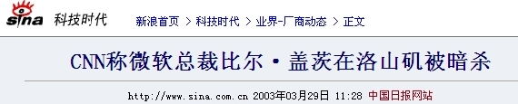
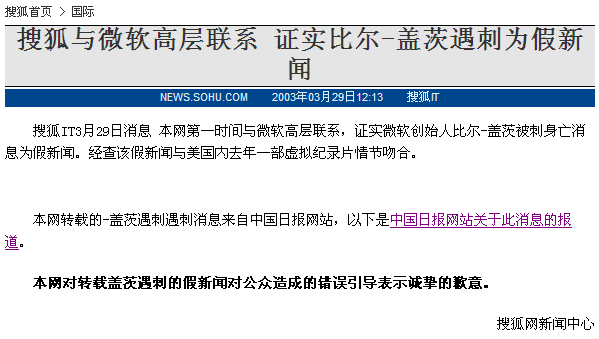
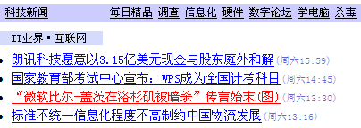

This morning, my wife received a phone call from her friend that Bill Gates was murdered in Los Angeles. What? The whole world goes crazy!
Her friend continued to tell the bad news. She was on a taxi and the radio is repeatedly reporting the news - a man with very sorrow voice interrupted the news and announce the murder of Bill Gates. He quoted China International Radio Station.
I am completely shocked, as much as I heard the news of Sept 11 one and a half years ago. I went to Sina.com.cn, the largest and most popular website in China, and it has put it in red font on the home page: Bill Gates Murdered in Los Angeles. The same piece of news appear on Sohu.com and Yahoo! China too. Here are some screen shoot of the news.

"CNN: Microsoft President Bill Gates Murdered in Los Angeles" 11:12
AM, March 29, 2003 on Yahoo! China
The words spread quickly. I got 3 phone calls and 4 MSN Messenger queries in just half hour (from 11:30 to 12:00). People are spreading the news as they did when the first plane hit the NYWTC. It seems the whole IT industry will be impacted by this event. There are 190 comment under the news in half hour on sina.com.cn.
On the contrary, CNN.com, MSNBC, Yahoo! are just as usual - the news cannot be found there.
After about one hour, the rumor ended. Sohu released an announcement that the news is fake. Sina did the same 1.5 hours later.
This event raises everyone's attention to the media in China again - who is responsible for this?


{kind=link}
{kind=link}
{kind=link}
{kind=link}